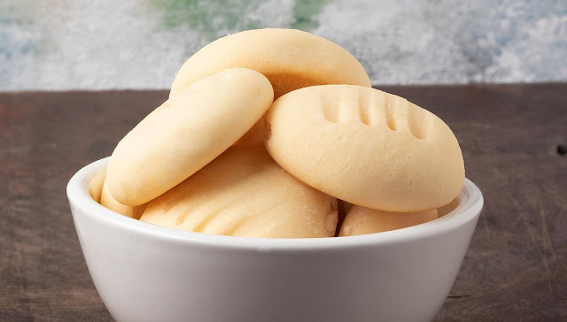

Mini Panqueca de Banana Proteica
Ingredientes:
1 banana média
1 ovo
1/4 xícara de aveia em flocos

Modo de Preparo:
1 - Bata a banana, a aveia e o ovo no
liquidificador ou com um mixer. Se você quiser, pode bater a mão também, mas pode ser que sua panqueca
fique com um pouco de sabor de ovo.
2 - Aqueça uma frigideira antiaderente e
coloque um fio de azeite ou óleo de coco.
3 - Coloque a massa num saco de confeitar e vá
despejando pequenas porções da massa na frigideira (ou use uma colher ou concha)
4 - Baixe o fogo, deixe cozinhar por 10
segundos ou até a massa começar a ficar com furinhos.
5 - Vire as panquecas usando uma espátula e
cozinhe mais 10 segundos do outro lado.
6 - Sirva com mel e bananas pra decorar. Você
pode também comer junto com pasta de amendoim.
7 - Agora é só aproveitar!
8 - receita de mini panqueca proteica de
banana
Biscoito de Maizena com Leite Condensado
Ingredientes:
500g de amido de milho200g de manteiga sem sal (ou margarina sem sal)
1 lata de leite condensado (395g)

Modo de Preparo:
1 - Num recipiente coloque a manteiga (em
ponto de pasta), o amido de milho e o leite condensado
2 - Misture usando uma colher grande e depois
continue misturando com as mãos
3 - Amasse bem a massa de biscoito até que ela
fique bem lisa
4 - Modele os biscoitos no formato desejado,
usando forminhas para cortar ou na mão mesmo
5 - Em seguida coloque os biscoitinhos numa
forma untada com manteiga, deixando um espaço entre os biscoitos
6 - Leve ao forno, pré-aquecido, à 180ºC por
10 minutos ou até dourar na parte de baixo do biscoito
7 - Espere esfriar e sirva.
Pipoca de Leite Ninho
Ingredientes:
1 xícara de milho de pipoca
2 colheres (de sopa) de óleo
1 xícara de açúcar
1/2 de xícara de água
1 colher (de sopa) de manteiga ou margarina (pode ser com ou sem sal)
1/2 xícara de leite em pó (pode ser a marca que você quiser)
Observação: Você também pode usar pipoca de micro-ondas no sabor Natural, com ou sem
sal, você escolhe.
Não use sabores amanteigados ou com sabor forte, como manteiga, queijo, pizza, etc.
Modo de Preparo:
1 - Em uma panela grande coloque o óleo e o milho de pipoca, leve ao fogo médio, mexa até que o milhocomece
a estourar, tampe a panela, baixe o fogo e deixe todos os milhos estourarem, mexendo a panela de vez em
quando para não queimar.
2 - Coloque em uma panela grande o açúcar, a água e a manteiga, misture e deixe em fogo médio até a
mistura
ter uma cor amarelada leve.
3 - Desligue o fogo, imediatamente adicione a pipoca, misture bem até cobrir todas as pipocas com a
calda de
açúcar e por último adicione o leite e misture.
bolo fit de banana com aveia
Ingredientes:
4 bananas maduras
4 ovos
1/2 xícara de óleo (de milho ou de coco)
2 xícaras de flocos finos de aveia
2 colheres (de sopa) de fermento em pó
1 colher (de chá) de canela (opcional)
1/2 colher (de chá) de essência de baunilha (opcional)
Modo de Preparo:
1 - Corte as bananas e coloque-as no
liquidificador ou processador, coloque também os ovos, o óleo ebata bem.
2 - Coloque essa mistura em uma tigela e
adicione os flocos de aveia, a canela e a essência de baunilha, misture bem.
3 - Por último adicione o fermento e misture
sem bater muito.
4 - Coloque toda a mistura em uma forma de
silicone, ou uma forma untada.
5 - Leve ao forno por aproximadamente 35
minutos à 180ºC.